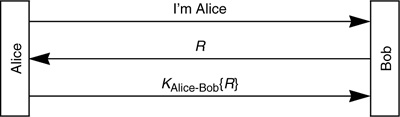
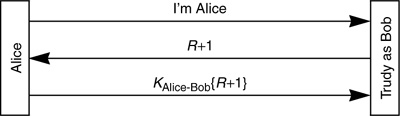

Networking Security Networking Security Networking Security Security Networking Security Networking Security Networking Charlie Kaufman Radia Perlman Mike Speciner Prentice Hall Network Security: Private Communication in a Public World, Second Edition Networking Security Networking Security Networking Security Security Networking Security Networking Security Networking Charlie Kaufman Radia Perlman Mike Speciner Prentice Hall Network Security: Private Communication in a Public World, Second Edition
11.3. Integrity/Encryption for Data
In order to provide integrity protection and/or encryption of the data following the authentication exchange it is necessary for Alice and Bob to use cryptography to encrypt and/or add integrity checks to the data messages. We described several bases for the authentication exchange:
§11.1.1 Shared SecretÂAlice and Bob share a secret key KAlice-Bob. §11.2.3 Public KeysÂAlice and Bob know each other's public keys, as well as their own private keys. §11.1.2 One-Way Public KeyÂonly one side has a public key pair; authentication is one-way.
As we discussed in §9.8 Session Key Establishment, it is desirable for Alice and Bob to establish a shared secret per-conversation key (known as the session key) to be used for integrity protection and encryption, even if they already know enough long-term secrets to be able to encrypt and add integrity checks to messages. So we'll want to enhance the authentication exchange so that after the initial handshake both Alice and Bob will share a session key. It is important that an eavesdropper not be able to figure out what the session key is. Once a session key is established, the workstation can forget the user's password, or at least a piece of untrusted software can proceed with a cryptographically protected conversation without being told any long-term secrets. First we'll discuss how to establish a session key for each of the three cases above. Then we'll discuss how to use the session key for encryption and/or integrity protection.
11.3.1. Shared Secret
Alice and Bob have a shared secret key KAlice-Bob. The authentication exchange is shown in Protocol 11-14. Perhaps mutual authentication was done, in which case there are two Rs, R1 and R2. Perhaps authentication was done using timestamps instead of random Rs. At any rate, there is sufficient information in this protocol so that Alice and Bob can establish a shared session key at this point in the conversation. They can, for example, use (KAlice-Bob +1){R} as the session key. More generally, they can take the shared secret KAlice-Bob and modify it in some way, then encrypt the challenge R using the modified KAlice-Bob as the key, and use the result as the session key.

Why do they need to modify KAlice-Bob? Why can't they use KAlice-Bob{R} as the key? The reason they can't use KAlice-Bob{R} is that KAlice-Bob{R} is transmitted by Alice as the third message in the authentication handshake, so an eavesdropper would see that value, and it certainly would not be secure as a session key.
How about using KAlice-Bob{R+1} as the session key? There's a more subtle reason why that isn't secure. Suppose Alice and Bob have started a conversation in which Bob used R as the challenge. Perhaps Trudy recorded the entire subsequent conversation, encrypted using KAlice-Bob{R+1}. Later, Trudy can impersonate Bob's network layer address to Alice, thereby tricking Alice into attempting to communicate with Trudy instead of Bob, and Trudy (pretending to be Bob) can send R+1 as a challenge, to which Alice will respond with KAlice-Bob{R+1}:

Then Trudy will be able to decrypt the previous Alice-Bob conversation.
So, Alice and Bob, after the authentication exchange, know KAlice-Bob and R, and there are many combinations of the two quantities that would be perfectly acceptable as a session key, but there are also some that are not acceptable as a session key. What makes a good session key? It must be different for each session, unguessable by an eavesdropper, and should not consist of a quantity X encrypted with KAlice-Bob, where X is a value that can be predicted or extracted by an intruder (as just discussed for X = R+1). See Homework Problem 3.
11.3.2. Two-Way Public Key Based Authentication
Suppose we are doing two-way authentication using public key technology, so that Alice and Bob know their own private keys and know each other's public keys. How can they establish a session key? We'll discuss various possibilities, with their relative security and performance strengths and weaknesses.
One side, say Alice, could choose a random number R, encrypt it with Bob's public key, and send {R}Bob to Bob attached to one of the messages in the authentication exchange. This scheme has a security flaw. Our intruder, Trudy, could hijack the conversation by picking her own R, encrypting it with Bob's public key, and send that to Bob (while impersonating Alice's network layer address) in place of the encrypted key supplied by Alice. Alice could, in addition to encrypting R with Bob's public key, sign the result. So she'd send [{R}Bob]Alice to Bob. Bob would take the received quantity, first verify Alice's signature using Alice's public key, and then use his private key on the result to obtain R. If Trudy were to attempt the same trick as in scheme 1, namely choosing her own R and sending it to Bob, she wouldn't be able to forge Alice's signature on the encrypted R. This scheme is reasonable. It has a minor security weakness that can be fixed partially (in 3, below) or completely (in 4, below). The flaw is that if Trudy records the entire Alice-Bob conversation, and then later overruns Bob (i.e., manages to take over node Bob and learn all Bob's secrets), she will be able to decrypt the conversation she'd recorded. It seems like the kind of threat that only a very energetic paranoid would bother worrying about, but we'll show how to fix it. First note that if Alice is careful to forget R after terminating the conversation with Bob, then overrunning Alice will not enable Trudy to decrypt the recorded conversation, since Trudy needs Alice's public key and Bob's private key to retrieve the session key R. She can only get that by overrunning Bob. This is like 2, above, but Alice picks R1 and Bob picks R2. Alice sends {R1}Bob to Bob. Bob sends {R2}Alice to Alice. The session key will be R1 R2. Overrunning Alice will enable Trudy to retrieve R2. Overrunning Bob will enable Trudy to retrieve R1. But in order to retrieve R1R2, she'll need to overrun them both. R2. Overrunning Alice will enable Trudy to retrieve R2. Overrunning Bob will enable Trudy to retrieve R1. But in order to retrieve R1R2, she'll need to overrun them both. In 2 we had Alice sign her quantity (i.e., she sent [{R}Bob]Alice instead of merely {R}Bob). Why isn't it necessary for Bob and Alice to sign their quantities here? Alice and Bob don't need to sign their quantities because although Trudy is perfectly capable of inserting her own {R1}Bob, she cannot decrypt {R2}Alice. Trudy might therefore be able to inject confusion into the system by having Bob think R1R2 is a key he shares with Alice, but since Trudy only knows R1, she can't actually see any data intended for Alice. Alice and Bob can do a Diffie-Hellman key establishment exchange (see §6.4 Diffie-Hellman), where each signs the quantity they are sending. In Diffie-Hellman, Alice chooses a random RA. Bob chooses a random RB. They have already agreed on public numbers g and p. Alice transmits gRA mod p. Bob transmits gRB mod p. They will use gRARB mod p as their session key. When we say they each sign the quantity they send, we mean that Alice doesn't simply transmit gRA mod p. She actually transmits [gRA mod p]Alice. And Bob actually transmits [gRB mod p]Bob. In this scheme, even if Trudy overruns both Alice and Bob, she won't be able to decrypt recorded conversations because she won't be able to deduce either RA or RB.
11.3.3. One-Way Public Key Based Authentication
In some cases only one of the parties in the conversation has a public/private key pair. Commonly, as in the case of SSL, it is assumed that servers will have public keys, and clients will not bother obtaining keys and certificates. Cryptographic authentication is one-way. The protocol assures the client that she is talking to the right server Bob, but if Bob wants to authenticate Alice, after the cryptographic session is established, Alice will send a name and password. Here are some ways of establishing a shared session key in this case.
Alice could choose a random number R, encrypt it with Bob's public key, send {R}Bob to Bob, and R could be the session key. A weakness in this scheme is that if Trudy records the conversation and later overruns Bob, she can decrypt the conversation (since she can retrieve R once she steals Bob's private key). Bob and Alice could do a Diffie-Hellman exchange, where Bob signs his Diffie-Hellman quantity. Alice can't sign hers because she doesn't have a public key. This is slightly more secure than scheme 1 because Trudy can't later overrun Bob and retrieve the session key (assuming Bob has diligently forgotten the session key after terminating the conversation with Alice).
Note that neither of these schemes assure Bob he's really talking to Alice, but in either scheme Bob is assured that the entire conversation is with a single party.
11.3.4. Privacy and Integrity
In §4.3 Generating MACs we discuss various methods of computing a MAC with secret key cryptography. In §5.2.2 Computing a MAC with a Hash we discuss how to do it with a message digest function. As noted in §4.3.1 Ensuring Privacy and Integrity Together, there is currently no standard algorithm for providing both privacy and integrity with a single key and a single cryptographic pass over the data. But see §4.3.5 Offset Codebook Mode (OCB). Until a standard is adopted, plausible solutions are: develop two keys in the authentication exchange and do the two operations independently; make a second key by modifying the first (by changing a few bits in a predictable way); use different cryptographic algorithms so a common key is (presumably) irrelevant; or use a weak checksum for integrity inside a strong algorithm for privacy.
The messages exchanged on a connection once the keys are known are likely to be in the form of discrete messages, where the authenticity of each must be determined before the conversation can proceed. Even if a message is authentic, it could be misinterpreted if played out of order. An attacker might, for example, record a message and then replay it later on in the exchange. This can be prevented by having all of the messages contain sequence numbers so that an out-of-order message is detected. Sequence numbers are used in both versions of Kerberos. Alternatively, the integrity code can be computed using not just the current message, but information about all previous messages, so that a replayed message will not be valid. This technique is used by Novell (see §24.1 NetWare V3).
Another form of attack is reflection. Here the attacker records a message going in one direction and replays it in the other. If the same sequence number could be valid in both directions, such a message could be misinterpreted. This can be avoided by using sequence numbers in different ranges for the two directions, by having a DIRECTION BIT somewhere in the message, or by having the integrity code computed by some subtly different algorithm in the two directions.
Sequence numbers have to be very large or you face the possibility of running out during a conversation. If you reuse sequence numbers during a conversation (i.e. while using the same session key), an attacker can replay an old recorded message when its sequence number recurs. This is an unlikely threat, but it is good form to prevent it. The best method is to change keys periodically during the conversation. (This also limits the amount of material a cryptanalyst can gather all encrypted under one key.) Changing keys in the middle of a conversation is known as key rollover. The simplest method of rolling over a key is to have one end choose a random key, encrypt it under the existing key, and send it to the other end. Because an attacker might cryptanalyze one key and use it to decrypt the subsequent keys, a stronger design would periodically repeat the authentication protocol or roll over keys by doing a Diffie-Hellman exchange to get the new key and integrity-protecting the public numbers with the old key.
Sequence number maintenance and key rollover can be significantly complicated if encryption is done using a communications protocol that does not automatically retry transmissions after errors and put messages back in order before decrypting them.
|